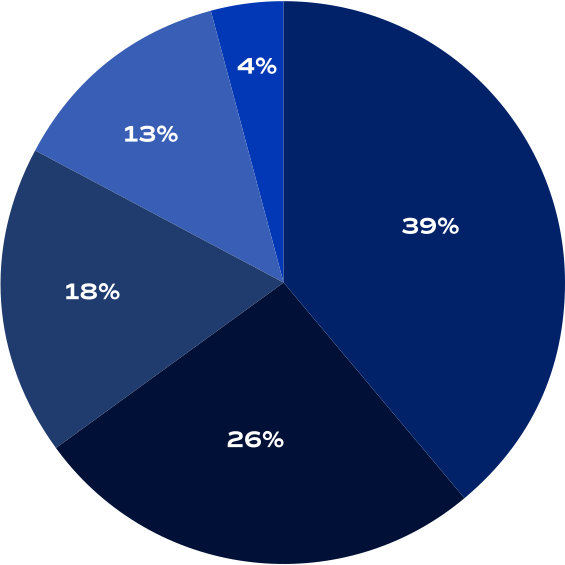

Our Portfolio
39% Resources
26% Technology
18% Industrial Products
13% Biopharma
4% Specialized

JSJ International is a family office with branches in London and Lancaster. Incorporated in 2016, our organization’s focus is providing small to mid-cap companies with strategic investment to accelerate growth.
Our business is built on the foundation of strong relationships. Collaboration and mutual goals lead to value creation, both for our team and the companies that we invest in.
We primarily invest in organizations that are listed on the LSE, AIM, and NEX, as well as other European markets and exchanges. Our fund participates in public placements, IPOs, and RTOs.
The team at JSJ International is uniquely positioned to provide strategic funding for innovative companies poised for expansion. Our portfolio is spread across three continents and a wide variety of industries including biotech, resources, and emerging tech.
The companies we invest in are typified by clear action plans and strategies to reach clearly identified targets. These teams are led by strong management groups with sector expertise and a track record of successes.
info@jsjinternational.co.uk